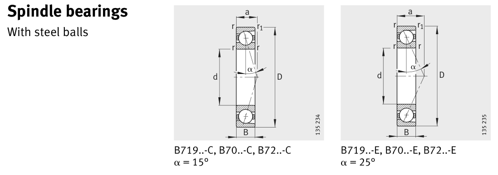

Original catalogue drawing - FAG Schaeffler HR 1, page 280

Scanned from the manufacturer catalogue page listing this part number. All part numbers printed on that table share the same drawing.
Scale cross-section
Blue = inner / outer ring, yellow = rolling element. Drawn to scale from this part's own
dimensions for selection reference only - not a manufacturing or assembly drawing.
Dimension table (mm / inch)
Symbol
Dimension
mm
inch
d
Bore diameter
15
0.5906
D
Outside diameter
32
1.2598
B
Inner-ring / bearing width
9
0.3543
r
Chamfer (min)
0.3
0.0118
Notes
Weights are given in kg. Load ratings are shown in both the original catalogue units and the converted value (1 N = 0.2248 lbf). Data is provided for selection reference only - confirm against the latest official catalogue before ordering.
Main dimensions
Bore d (mm)
15
Outside dia. D (mm)
32
Width B (mm)
9
Load ratings & speeds
Basic dynamic load rating Cr (lbs)
1394
Basic static load rating Cor (lbs)
764
Basic dynamic load rating Cr (N)
6200
Basic static load rating C0r (N)
3400
Fatigue limit load Cur (N)
248
Limiting speed nG (rpm)
48,000
Effective load centre a (mm)
8
Weight
Weight (kg)
0.03
Mounting dimensions (fillets / shoulders)
Housing fillet r max (mm)
0.3
Chamfer r1 min (mm)
0.3
Shaft shoulder da (mm)
19
Housing shoulder Da (mm)
29
Housing fillet ra max (mm)
0.3
Housing fillet ra1 max (mm)
0.1
Bearing life (ISO 281 basic rating life)
C / P
Equivalent load P (N)
L10 (106 rev)
L10h at 3,000 rpm
4
1,550
64
356
6
1,033
216
1,200
8
775
512
2,844
10
620
1,000
5,556
15
413
3,375
18,750
Basic rating life per ISO 281: L10 = (C/P)3 with C = 6,200 N. Hours = L10 x 106 / (60n). Life-modification factors for lubrication, contamination and temperature (aISO) are not included.
Source & traceability
Brand
FAG
Source catalogue
FAG / Schaeffler Rolling Bearings HR 1
Catalogue page
p.280 (dimensions)
Load ratings in newtons, fatigue limit load Cur, limiting speed nG and reference speed nB.
Send us the quantity you need and we will come back with price and
lead time, normally within 24 hours. Equivalent parts from other brands can be quoted at the same time.